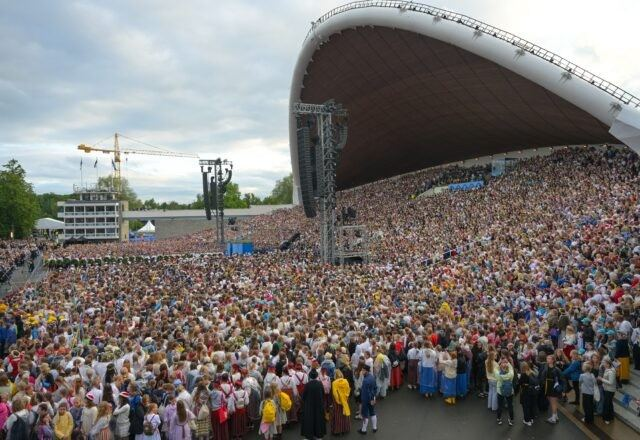

Festivals · Culture
Estonian Song and Dance Celebration 2028 (The Way We Are)
- Dates
- –
- Venue
- Tallinn Song Festival Grounds and Kalev Stadium
- Location
- Tallinn, Estonia
- Format
- In-person
- Category
- Culture
- Industry
- Culture
- Organiser
- Estonian Song and Dance Celebration Foundation
- Official website
- https://2028.laulupidu.ee/en/
About
Dates are local civil dates in Estonia (Europe/Tallinn).
Topics: song celebration, dance celebration, choral music, folk dance, Estonian culture.
No organiser attendance figure found on the official pages fetched 24 Nov 2026. Ranked by our estimated size tier 'very large' (100,000+ attendees/visits), a judgement from format, venue and scale, not an official number.